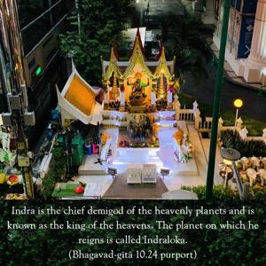
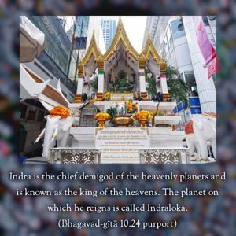

Of priests, O Arjuna, know Me to be the chief, Bṛhaspati. Of generals I am Kārttikeya, and of bodies of water I am the ocean.


Indra is the chief demigod of the heavenly planets and is known as the king of the heavens. The planet on which he reigns is called Indraloka. Bṛhaspati is Indra’s priest, and since Indra is the chief of all kings, Bṛhaspati is the chief of all priests. And as Indra is the chief of all kings, similarly Skanda, or Kārttikeya, the son of Pārvatī and Lord Śiva, is the chief of all military commanders. And of all bodies of water, the ocean is the greatest. These representations of Kṛṣṇa only give hints of His greatness.